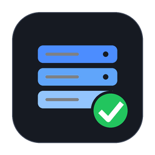

Acervo
Conectando a …
Procurando o Acervo na sua rede…
Encontrei na sua rede:
Não conecta? Passo a passo
- O celular do Acervo está ligado e na tomada? Abra o Termux nele e rode
acervo-ctl status. Se disser “parado”, rodeacervo-ctl start. - Em casa: este computador e o celular precisam estar no mesmo Wi-Fi. Toque em Procurar na rede: o app acha o Acervo sozinho.
- Fora de casa: ligue o Tailscale neste computador e no celular do Acervo (mesma conta). Fora de casa tudo funciona igual a dentro de casa, sempre com a senha.
- Endereço seguro: no celular, rode
acervo-ctl duckdns --mostrare cole aqui o endereço que começa comhttps://. Ele funciona em qualquer navegador, sem instalar certificado. - Ainda nada? Rode
acervo-ctl restartno celular, espere um minuto e toque em Tentar de novo.
Depois de conectar, todos os tutoriais (transferir lotes para um armazenamento, verificar a saúde, esvaziar o iPhone…) ficam em Ajuda, na barra lateral do Acervo.